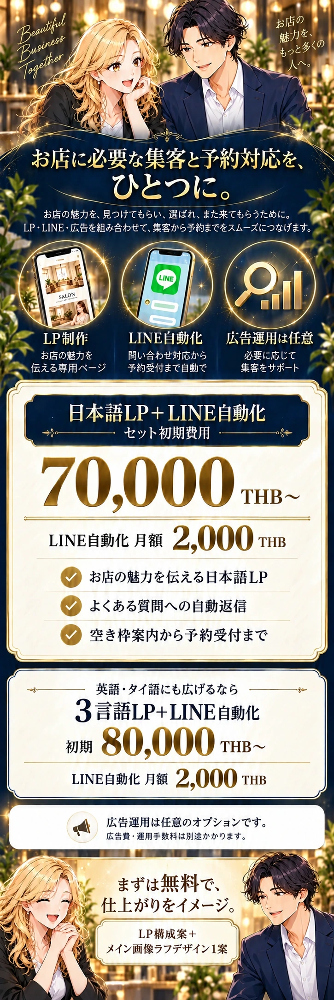
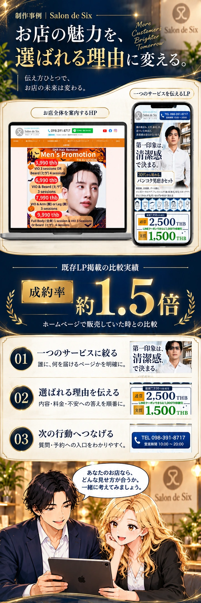

INSERTION PLAN
前半に置くなら、この順番。
- ファーストビュー・お悩みの漫画
- セット紹介
- 追加提案 01サービスと料金の概要
- 追加提案 02Salon de Sixの制作事例
- LP実例・LINE・広告の詳しい説明へ
余白や文字を縮めず、早い段階で「何を頼めるか・いくらか・どんな制作物か」を判断できる構成です。
SERVICE & PRICE
セットの全体像と
費用を先に伝える。
LP＋LINE自動化の初期費用、月額費用、広告の別料金を分けます。広告運用は任意であることも、ここで明示します。


この案のポイント
- 主役は「日本語LP＋LINE自動化 70,000THB〜」。
- 月額2,000THBを価格の直下に配置。
- 3言語セットは次の選択肢として表示。
- 無料提案を「LP構成案＋メイン画像ラフデザイン1案」に統一。
価格は現在の料金表と今回のご指示をもとにしています。提案画像内の文字はデザイン確認用です。採用後は、漫画以外の文字をモリサワWebフォントで実装します。
SALON DE SIX / CASE
制作画面と考え方を、
ひとつの事例に。
ホームページと商品特化LPの画面を並べ、「どう伝え方を変えたか」を説明。既存掲載の約1.5倍は、確認事項を分けて扱います。


現在の素材で見せられること
- 実際に制作したHP・LPのデザイン。
- 一つのサービスに絞ったページの構成。
- 料金・内容・質問や予約への入口の見せ方。
比較デバイス内の画面は、下記の制作物画像を参照して生成したデザインカンプです。採用後の画面部分には実画像を使用します。数値の計測期間に使われていた画面と同一であることを示すものではありません。
EVIDENCE STATUS
事例として使える情報と、
確認が必要な情報。
「約1.5倍」は本体LPにすでに掲載されている内容です。この提案で新たに数値の集計を検証したわけではありません。
今ある素材・記載で確認できること
- Salon de SixのHP画像・商品特化LP画像がある。
- 既存LPに「成約率約1.5倍」「ホームページで販売していた時との比較」の記載がある。
- 今回の案には、新しい成果の数字・顧客の推薦コメントを追加していない。
成果事例として強く見せる前に確認すること
- 何を成約として数えたか。
- 比較した期間と、各期間の訪問数・成約数。
- 流入元・広告費・価格・商品内容などの比較条件。
- 元の計測レポート、数値の掲載可否。
確認が取れるまでは：本体への追加は保留。採用する場合も、数字を外した「制作事例」として先に紹介する方法があります。集計条件が確認できたら、その条件とセットで約1.5倍を掲載します。
参照した実際の制作画面